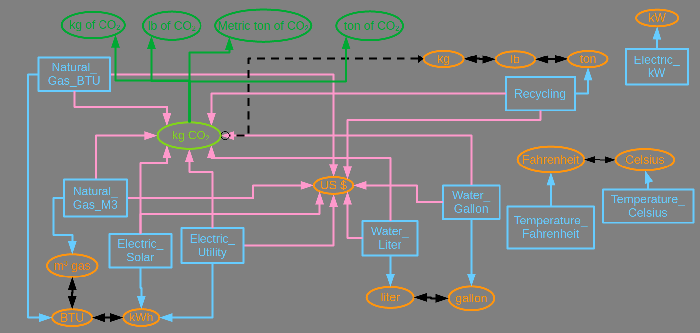

OED Documentation
Conversion & Unit
Version V1.0.0
Documentation overview
User documentation
Information
Graphing
Meters/Groups
Other Features
Admin documentation
Documentation versions for this page
Introduction
A unit is a measure of a resource in OED. It corresponds to a unit as in common usage. There are three common types of units that OED uses:
- Quantity. These are associated with resources measured as an amount and can be created/consumed. Common examples include energy (kWh, BTU, etc.), mass (kg, lb, etc.), volume (gallon, liter, etc.), money (US dollar, Euro, etc.) and CO2 emitted (kg of CO22, tons of CO2).
- Rate. These are associated with the amount/quantity consumed or created per unit of time. Common examples include volume/time (gallon / minute, gallon / day, liters / hour), money / time (dollars / day, e.g., spending per day) and power (kW).
- Raw (as named by OED). These are not quantities and are not consumed. The common example is temperature (Celsius, Fahrenheit).
A conversion is the link between two units. It creates a linear transformation between two units. For example, to go from kilograms to grams, one must multiply by 1000 (and technically add 0). To go from Celsius to Fahrenheit, one must multiply by 9 / 5 and then add 32. OED cannot deal with nonlinear conversions/transformations.
OED uses all the units and conversions in a site to create a complete picture of what units are compatible with what other units. This allows OED to show the allowed/compatible and disallowed/incompatible units when one is graphing in OED.
Unit details
OED classifies units in three ways:
- Unit. This is the common meaning of a unit as a measure. It is what OED uses as graphic units.
- Meter. To support a simpler and more efficient system, OED needs to differentiate between graphic units (units) and ones associated with a meter. As such, the unit associated with a meter is a meter unit. Meter units are never directly seen by the user so are displayable of none in their settings.
- Suffix. This is a special unit in OED that allows for the creation of a unit that is also associated with another unit. For example, if you want to display the quantity of CO2 then it also needs a mass unit associated with it. Suffix units allow for the easy creation of such units within OED where the details are described later. Note that suffix units are used by OED to create these special units but they are never seen by typical users as they are converted to other standard units. As such, their displayable is none in their settings.
A unit also has an associated seconds in rate that defines the denominator for a rate unit. If it is not a rate unit then it has no meaning. The seconds in rate can be any positive number but common values are: per second or 1, per minute or 60, per hour or 3600 and per day or 86,400. This is used to define the rate denominator for a meter unit or when defining a normal unit. Note one can graph in a different rate per seconds and that is a choice the user can make.
OED allows a site to define any unit it wishes as long as it falls into one of these categories.
Conversion details
A conversion in OED has a number of attributes:
- Source. This defines the originating unit for the conversion. It is the unit you are converting from.
- Destination. This defines the final unit for the conversion. It is the unit you are converting to.
- Bidirectional. This determines if the conversion is invertible. If yes then OED is allowed to invert the conversion and go in the opposite direction so that there is the related conversion from destination to source. If no then it only goes in one direction and will not be inverted. If no then it is ok to put a different conversion from the destination to the source. It is not only easier to use bidirectional conversions when they are appropriate but they are slightly easier for OED to deal with.
- Slope. This defines the slope of the linear transformation for this conversion. For example, it is 1000 for kilograms to grams.
- Intercept. This defines the intercept of the linear transformation for this conversion. For example, it is 32 when converting from Celsius to Fahrenheit.
OED allows a site to define conversions between any pair of unis within its site. However, it is important that the site follow these rules which OED should enforce:
- There cannot be two different conversions between the same units in the same direction. Thus, a conversion that is bidirectional between two units means those same two units cannot be involved in any other conversion. It is also forbidden to have a one directional conversion between the same pair of units in the same direction.
- There should never be a conversion between different types/classifications of units. This means that units should only be between the types of quantity, rate and raw and not between them. The reason for this is it does not make physical sense. It is not normal/rational, for example, to convert between gallons and temperature within a dashboard.
- A meter unit should only be the source of a conversion. The reason is that a meter directly receives its readings so you cannot convert a resource back into a meter.
- A suffix unit should only have bidirectional of no (unidirectional) for a conversion as either the source or the destination. The section below on suffix unit will clarify why.
Chained conversions
To make units easier to work with, OED allows for chained conversions. What this means is that OED will look at all conversions and determine if there is a chain of allowed conversions between two units. If this is the case it will determine the overall conversion needed and allow a user to use that conversion when graphing. As an example, suppose a site has the following conversions between units that are already defined:
- lb ⟷ short ton (often called a ton)
- g ⟷ kg
- kg ⟷ lb
- kg ⟷ metric ton
The order that the conversions are entered does not matter and that is why they are in a somewhat random order above. OED can analyze these conversions to create an overall conversion chain of g ⟷ kg ⟷ metric ton ⟷ lb ⟷ short ton that relates all of these mass units so any one can be converted to any other one. This is done automatically when conversions are added to OED. In this example it means any of these mass units could be used to graph any meter that collected in a mass unit for the ones in the example.
In the case of conversions that only go in one direction, OED will only use that direction for determining chains. In the standard conversions provided by OED there is a one directional conversion of a meter to a graphic unit of Electric_Utility → kWh. There are also conversions that are bidirectional for units of kWh ⟷ BTU and BTU ⟷ m³ gas. Given these, OED will allow for the following conversions: Electric_Utility → kWh, Electric_Utility → BTU, Electric_Utility → m³ gas, kWh ⟷ BTU, kWh ⟷ m³ gas and BTU ⟷ m³ gas. This means that the electric utility meter can be converted to any of the energy units but it cannot go the other way. There is a conversion between all the energy units in both directions as desired. From a practical standpoint this means one can graph the meter in any energy unit.
Compatibility
Two items are compatible if there exists a conversion between them. This includes any derived chained conversions that OED determines. Here is the meaning for different items within OED:
- Units. Two units are compatible if there exists a conversion between them.
- Meter and graphing unit. If the meter's unit is compatible with the graphing unit then the meter is compatible with the graphing unit.
- Meter with another meter. If the set of units compatible with one meter's unit and the set of meters compatible with a different meter's unit contain at least one item in common then the two meters are compatible. This is because one can graph both meters in at least one unit and, in general, all the common values between the two sets of units.
- Group and graphing unit. A group can contain many meters within it. If one takes the set of compatible units for each meter and finds all the units that exist in all the sets then those are the units compatible with the group. This is because one can graph the group in these units. If the graphing unit is in set of overlapping units then it is a compatible unit for graphing.
- Group and meter. If the compatible units of the group and meter overlap then they are compatible. All the units that overlap are all the compatible units.
- Group and group. If the compatible units of both groups contain the same unit then they are compatible. All the units contained for both groups are all the compatible units.
See the example section for concrete examples.
Suffix unit
As was briefly discussed above, a suffix unit is a special unit in OED that allows for the creation of a unit that is also associated with another unit. Let's expand by trying to use a suffix unit to display CO2 as a graphing unit. Suppose you create the unit kg CO2 with the suffix of CO2. You then create a one way conversion to kg as kg CO2 → kg were there slope 1 since each is a kg. The conversion is one directional because if you went the other way you could automatically take kg as a mass and convert it to CO2 and this mixes two types of resources. A separate conversion from a meter reading in kg to CO2 would cover this case as shown in the example below. Now create a one directional conversion from the Electric_Utility meter to kg CO2 as Electric_Utility → kg CO2 where the slope would be the kg of CO2 produced for each kWh of electricity used. A simple value for a standard electric provider in the U.S. might be 1.9. Since the unit kg CO2 has a suffix, OED will handle it specially when analyzing the conversions. In this case, it will create the one directional conversion of Electric_Utility → kg of CO2. Note that OED gives the destination unit a new name based on the unit that suffix is linked to (kg) and the suffix (CO2) with the word "of" between them. It is the logical name that people would say of kg of CO2. While OED internally stores the original suffix unit of kg CO2, it will not be seen on the site and users are unaware it exists.
To show the real power of a suffix unit, suppose the site also had the units and conversions listed in the previous section for mass (lb, short ton, g, kg, metric ton). In this case, OED would create a new unit and conversion for each of these mass units to yield: Electric_Utility → lb of CO2, Electric_Utility → short ton of CO2, Electric_Utility → g of CO2, Electric_Utility → kg of CO2 and Electric_Utility → metric ton of CO2. For the user they can now graph the electric usage from this meter in any of the five mass units even though the admin only linked to one of the units. This is an extended example of doing chained conversions that are special within OED. Note OED will add more suffix units if an additional mass unit and conversion is added after the suffix unit was added. Basically, OED will keep the site up to date for all the information it has. If a site does not want all the OED created suffix units to be seen by users then the admin can edit the created units to change the displayable setting appropriately.
Example
Please see the example description as it will extended as the current example of how OED works with units and conversions. An updated graphic from that page is: 
where the suffix units are more accurately shown. The light green suffix unit of kg CO2 is linked to the OED created ones that are in darker green. Note that as part of this process OED does not use chained conversions but a series of direct conversions to the units created. This is unusual but OED will properly maintain these individual conversions if changes are made in units and conversions. The conversion from the suffix unit to the unit given by the site is one directional and shown by the dashed black arrow (kg CO2 → kg). Each rectangle or oval represents an actual unit on the OED site but the light green one is not visible to the user. Each arrow represents an actual conversion on the OED site but all are not visible to the user. These are the dotted black line and the pink lines from meters to kg of CO2 are replaced by links to the ones created by OED for a suffix unit. Thus, each of these pink lines is replaced by 4 lines going to each of the created suffix units in dark green.
Here are a few things that are consistent with the discussion previously on this page:
- The meters (in blue rectangles) only have one directional arrows that originate from the meter. This is required by OED.
- The orange ovals represent standard units that can also be used for graphing within OED. They all have bidirectional conversions between them and this is common but not required.
- Each blue arrow connects a meter to its collection unit (which is also an allowed graphic unit). There is only one such arrow from each meter and there is always an arrow because otherwise the meter cannot be graphed within OED. The meter collection unit is specified with each meter's information.
- The pink arrows represent other units to which the meter is connected and can convert. There are two types of these connections. The first is to a normal unit and then OED allows the user to graph in this unit. For example, many meters are connected to US $ so the values from these meters can be graphed in U.S. dollars. Each arrow has a different conversion so the cost for each meter can reflect its unique cost at the site. The second is to connect to a suffix unit as was described above. The actual graphic units for the suffix units (created by OED) can be seen by the connected one directional dark green arrows. In this example these all relate to the suffix unit of kg CO2 (in light green). As described above, the dashed, one directional, black arrow represents the original conversion relating to the suffix unit. The user only sees the dark green units when trying to graph within OED.
- The bidirectional, solid black arrows represent conversion between standard units that can also be used as a graph unit within OED.
Here are a few examples of what a figure means.
- kWh, BTU and m3 gas are all compatible units.
- The Electric_Solar meter (actually formally a unit) collects in kWh and can also be graphed (compatible) in BTU, m3 gas, US $ and the suffix units of kg of CO2, lb of CO2, Metric ton of CO2 and ton of CO2. An example is the Great Dorm 1st Floor Electric meter.
- The Temperature_Fahrenheit meter unit collects in Fahrenheit and can also be graphed (compatible) in Celsius. An example is the Library Temperature meter.
- The Recycling meter (actually formally a unit) collects in ton and can also be graphed (compatible) in lb, kg, US $ and the suffix units of kg of CO2, lb of CO2, Metric ton of CO2 and ton of CO2. Note that even though there are mass units associated with the collection amount and CO2 OED will keep them separate and graph them correctly. An example is the Campus Recycling meter.
- The Electric kW meter (actually formally a unit) collects in kW and can only be graphed in this unit (no other compatible units). An example is the Theater Electric Power meter.
Note that this site could have many meters using the Electric_Utility meter unit. This makes the site easier to maintain and more efficient. This is true for any meter unit defined.
Using the groups from the example, the following compatibilities are derived:
- Campus Electric group is compatible with kWh, BTU, m3 gas, US $ and the suffix units of kg of CO2, lb of CO2, Metric ton of CO2 and ton of CO2 because all the underlying meters have the same compatibility. Campus Energy group is the same.
- Campus All group is compatible with US $ and the suffix units of kg of CO2, lb of CO2, Metric ton of CO2 and ton of CO2 because it includes energy and water meters.